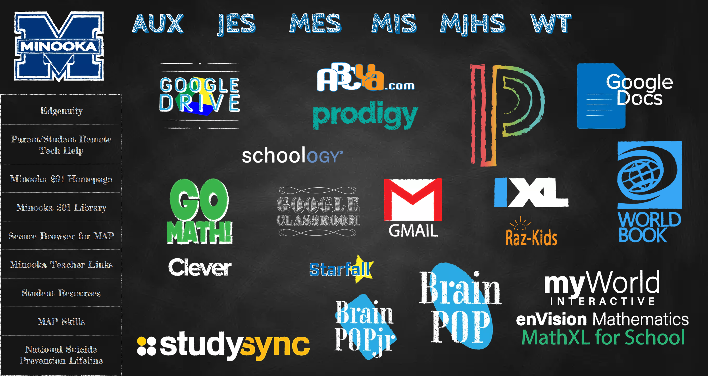

Student Links Page
Project Description
This is a landing page for all students in the district to use to get to various web applications. Includes ways that each school can get specific links to students and our media teachers to host a page with links they need.
The skeleton is built with CSS grids, interactions built with JQuery, and the use of Google App Scripts to develop a system for link submission. There is also functionality that will automatically move the header menu to the school based on IP addresses.
Tools Used
HTML, CSS, JavaScript, JQuery, CSS Grid
Challenges
The first challenge was creating a design that would freshen up the old version of the site, which was hastily thrown together. I went through a few iterations of ideas before finalizing a chalkboard design. I spent some time creating graphics that gave a more chalk art feel.
This was my first big work with CSS grid, so it was a challenge to sketch out the structure that I needed at first. The other large challenge was the iframe interactions and window timings.
Iterations
The first rollout was a big success and the basic structure has stayed the same. Most of the changes have come from different apps being used, which was easy to swap out. A major change came from working on making the site have better performance and accessibility. A lot of attention went into working with file size changes for such a graphic-heavy site as well as refactoring some of the structure to allow for keyboard navigation and focus shifting.